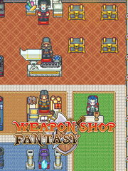

Weapon Shop Fantasy
Details
|  | |
| Playtime | 5h 27m 0s |
| Last Activity | 5/21/2018 8:51:42 |
| Added | 8/19/2023 14:50:25 |
| Modified | 8/19/2023 15:19:16 |
| Completion Status | Played |
| Library | Steam |
| Source | Steam |
| Platform | PC (Windows) |
| Release Date | 3/27/2017 |
| Community Score | 80 |
| Critic Score | |
| User Score | |
| Genre | Adventure Indie Role-playing (RPG) Simulator |
| Developer | Digdog Studio |
| Publisher | INDIECN |
| Feature | Single Player |
| Links | Official Steam Wikia iPhone Itch iPad Twitch |
| Tag | |
Description

Weapon Shop Fantasy is a shop simulator with a whole lot of RPG elements.
Or maybe it's an RPG with a whole lot of shop simulation…
You decide.
Anyway.

Craft mighty weapons!

Enchant them with magic!

Here are just a few of the things you can do in Weapon Shop Fantasy…
Defeat mighty (pixelated) enemies
Collect rare materials
Learn awesome and useful skills
Make your own skill combinations
Defeat monsters for new materials… or just steal them and run away
Bring on new staff, send them on adventures, keep all of the materials they gain
Read some hilarious (and sometimes cheesy) dialogue between some pretty silly characters

In Weapon Shop Fantasy, you can also hire a team of staff members to do specific jobs for you, additionally you can improve their abilities and push them to develop new skills.
The staff training system is almost limitless, so there's always room for improvement and investment in your staff. Combine staff training with enemy battles, collected materials, and skill unlocks, to make your crafted weapons and equipment more and more powerful.
There are over 200 different pieces of gear and equipment to be crafted, with an equally impressive selection of over 200 skills. With skill combinations, you've got almost limitless options.
There's a huge selection of over 70 monsters, as well as a few giant bosses to conquer, in addition to over a hundred missions to complete.
We've also added some unique mechanics to the game. One example is having to lure bosses out of hiding, using food to entice them. Offer them something sweet, then destroy them.
When you craft different weapons and equipment, you'll notice that each one has its own attributes and skill bindings. The weapon crafting also has an element of luck, so you never know when you might just luck out and craft the perfect weapon.
Also, what weapon crafting game would be complete without additional enchanting mechanics to further imbue your equipment with even more raw power.
In addition to crafting and making money, you can also send your staff members on auto-battle journeys where they'll earn materials for you as they progress deeper and deeper into dungeons. You'll see your materials building up, but pay attention to the health of your staff. If you feel there's a chance they might die, you can run from battle at any time and keep any materials they've already earned from that journey.
We hope, whatever you decide to do in the game, that you have a great time doing it.
Sincerely,
Digdog Studios Ltd.